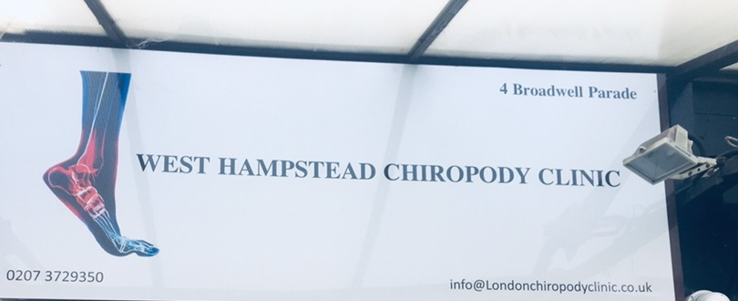

About us
A holistic approach to foot health
London Chiropody Clinic treats patients of all ages, from routine nail and skin care through to structural foot problems and the ongoing needs of diabetic and arthritic patients — at our West Hampstead practice and our Tottenham clinic.
Our approach
Our podiatrists are university graduates holding a BSc (Hons) and MSc in Podiatric Medicine, registered with the Health and Care Professions Council (HCPC), and members of the Society of Chiropodists and Podiatrists. They are qualified to diagnose and treat lower-limb conditions, carry out minor surgical procedures including nail surgery, and assess gait problems.
“We aim to get to the root of the problem through our reliable methods, ensuring an improved quality of life.”
We treat patients of all ages and genders, aiming to offer a “high standard, ethical, compassionate care, and professional attention” at every appointment.
HCPC-registered
Health and Care Professions Council
BSc (Hons) & MSc
Podiatric Medicine
Society Member
Society of Chiropodists and Podiatrists

Patients tell us
A gentle, thorough manner
Many of our patients specifically mention Nur Farah’s manner in their reviews — kind, gentle, and thorough.
★★★★★“A kind man and great chiropodist! He saved my toenails and I am very grateful.”
— KateW-45
★★★★★“He is very experienced and knows his stuff and would recommend him wholeheartedly.”
— MikeJ-120
★★★★★“Very professional, caring, impeccable sterile equipment. Very satisfied customer.”
— HappyF-2
Two locations, one standard of care
Whichever clinic you visit, you’ll see an HCPC-registered podiatrist who takes the time to explain what’s going on with your feet.